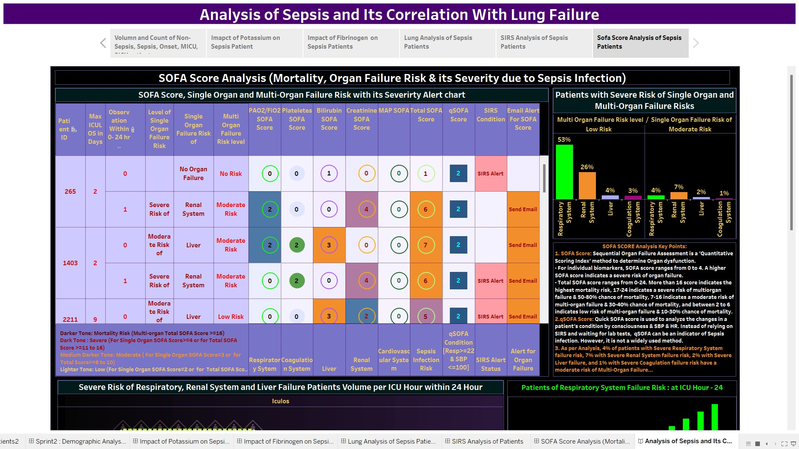

Problem Statement
The telecom company has been facing high customer churn over the past few years. Through marketing and different promotion campaigns, the company attracted new customers but was not able to generate revenue. So, as a data analyst, I am trying to identify the churn rate and possible causes and provide an effective way to find answers to their day-to-day questions and provide insights.
Project Description:
Churn Analysis is a crucial aspect of understanding customer behaviour and improving retention. By analyzing various aspects of the Telecom data, I seek to identify the churn rate, causes, customer behaviour, and trends using Python and Tableau.
Technologies Used:
- Python
- Tableau

Problem Statement
Sepsis is a life-threatening condition which can lead to a person's mortality. Therefore, early detection of Sepsis is important to initiate proper treatment and recovery of patients.
Project Description:
This data analysis project aims to provide insight into the Sepsis Patient Dataset to determine the correlation with Lung or Respiratory failure.
Project Duration:
6 sprints; Project Platform: NumpyNinja.
Technologies Used:
- Excel
- Tableau

Project Description:
This data analysis project aims to provide insight into the professional HR Data analysis of a company.
By analyzing various aspects of the HR data, I seek to identify the trends and gain a deeper understanding of new hires and existing employee retention.
Technologies Used:
- PowerBI

Problem Statement
Market fluctuations and rapidly changing technology affect the global market. Many published reports showed that around half of the employees wanted to change jobs. So, how does the HR department make these decisions in volatile market conditions?
Project Description
This dataset is collected as part of the survey conducted online to check different aspects and trends of Data professionals.
Technologies Used
- PowerBI

Description
Explore the Tableau Projects: Directory of all dashboards and Tableau projects.

Data Analysis using Tableau:
Analyzed the Superstore Data for determining the loss incurring sales products and categories, regions and stores.
Project Platform:
NumpyNinja

Data Analysis of Covid Dataset
SQL hackathon project for data exploration and analysis.
Project Platform: NumpyNinja.
Technolgies Used:
-SQL

Data Exploration using Python: Python Hackathon project for analysis and data exploration.
Project Platform: NumpyNinja